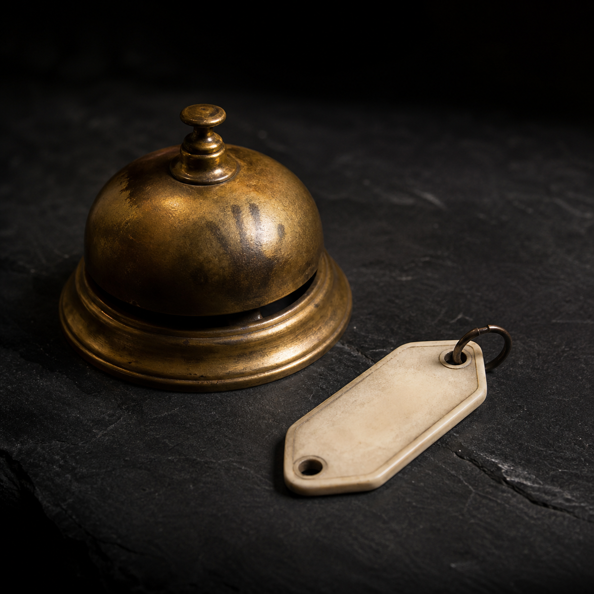

本文へ移動
LIVE CATALOGUE / 12 LOTS
登録入札者 48名
影札
AUCTION
KAGEFUDA ARCHIVE MARKET
ホーム
開催中
来歴アーカイブ
影札について
PRIVATE DESK
0
HOME
/ LIVE AUCTIONS
Night catalogue no. 03
開催中の競売
終了時刻はロットごとに異なります。監査保留品への入札には、来歴確認書への同意が必要です。
ロット検索
すべて
音声・映像
写真
器物
6
LOTS / 更新 03:00
監査保留
LOT 0417 · 音声記録
第七码頭で回収された録音機
00:17:26
現在
¥18,400
LOT 0529 · 金属小物
03:17で止まった銀時計
00:45:28
現在
¥7,800
LOT 0682 · 額装写真
椅子だけが残された肖像
01:13:30
現在
¥12,000
来歴制限
LOT 0711 · 映像資料
三つ穴の未現像フィルム
01:41:32
現在
¥31,500

LOT 0731 · 宿泊設備
閉館後も鳴るサービスベル
02:09:34
現在
¥24,100
返却品
LOT 0804 · 漆工
中身のない歯形の音楽箱
02:37:36
現在
¥42,000
該当する記録がありません
検索語を変えるか、閲覧権限をご確認ください。
Search catalogue
 監査保留監査保留
監査保留監査保留

 来歴制限
来歴制限 返却品
返却品